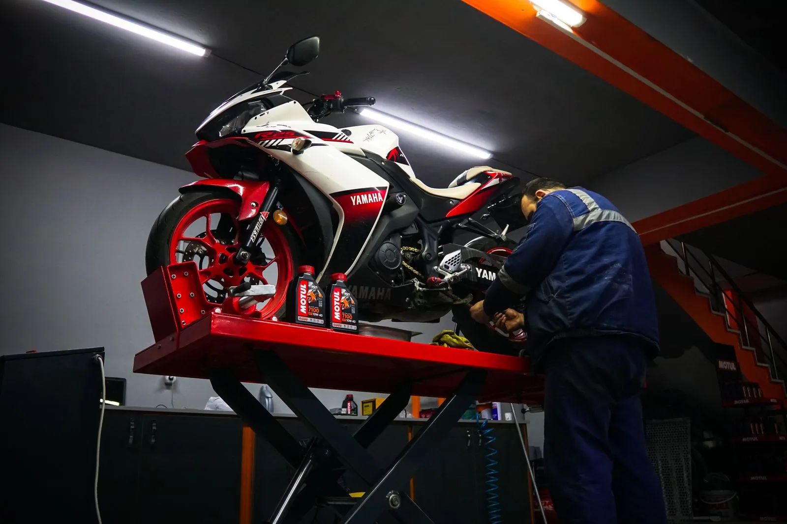
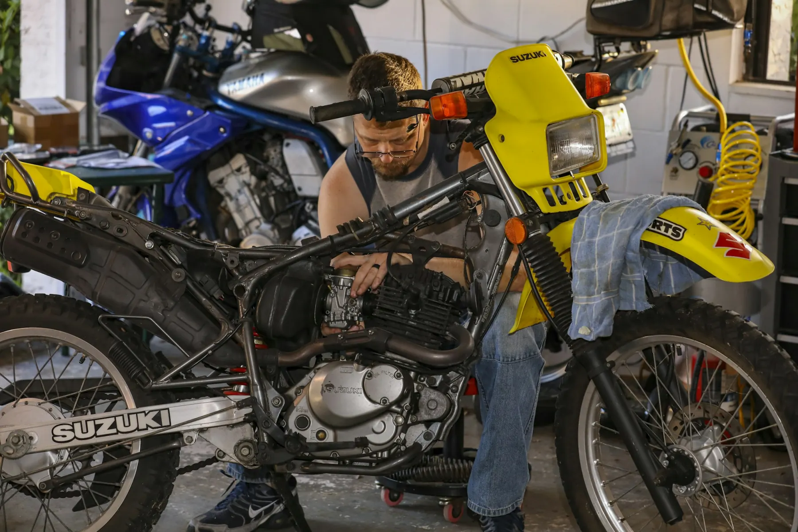
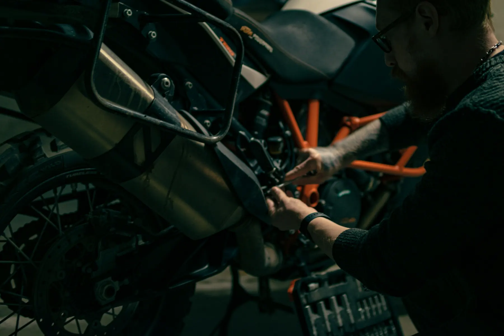

Inside the workshop
Precision service.
Practical repairs.
Road-ready motorcycles.
Inspection-led maintenance, clear findings and careful mechanical work for everyday riders and long-distance machines.
Common workshop jobs
Start with the symptom.
Work toward the cause.
Not every rider arrives with a diagnosis. Tell us what the motorcycle is doing and we will begin with a structured check.
Motorcycle types
One workshop approach. Different machines.
Service scope is matched to the motorcycle, its use and the manufacturer schedule—not a one-size-fits-all checklist.
See commonly serviced makes
Workshop philosophy
Mechanical work should be understandable.
We begin by inspecting the motorcycle and listening to the rider. Findings are explained in plain language, proposed work is agreed, and the machine is checked again before handover.
- 01Inspect first
- 02Explain findings
- 03Agree on work
- 04Service correctly
- 05Test before handover
Service timeline
From arrival to handover.
Timing varies by diagnosis, motorcycle condition and parts availability. Your preferred booking time remains subject to workshop confirmation.
Request
Share the motorcycle, symptoms and preferred date.
Inspect
We check the reported issue and relevant systems.
Estimate
Required work and parts are explained before proceeding.
Service
Approved maintenance or repair is completed methodically.
Handover
Final checks are completed and findings are reviewed.
Multi-brand servicing
Familiar makes. Independent advice.
Independent workshop servicing multiple motorcycle makes. Manufacturer names are referenced only to describe motorcycles commonly serviced.
Rider feedback
Clear explanations make better workshop visits.
Sample feedback presented as design content; service experience varies by job and motorcycle condition.
“The issue was shown to me before parts were discussed, and the estimate separated what was needed now from what could wait.”
“A methodical electrical check found the connection fault instead of simply replacing the battery.”
“Tyre condition, pressure and wheel bearings were all reviewed while the wheel was off.”

Plan a workshop visit
Tell us what the motorcycle needs.
Prepare a service request with your model, symptoms and preferred visit time. Availability is confirmed by the workshop.
Prepare Service Request